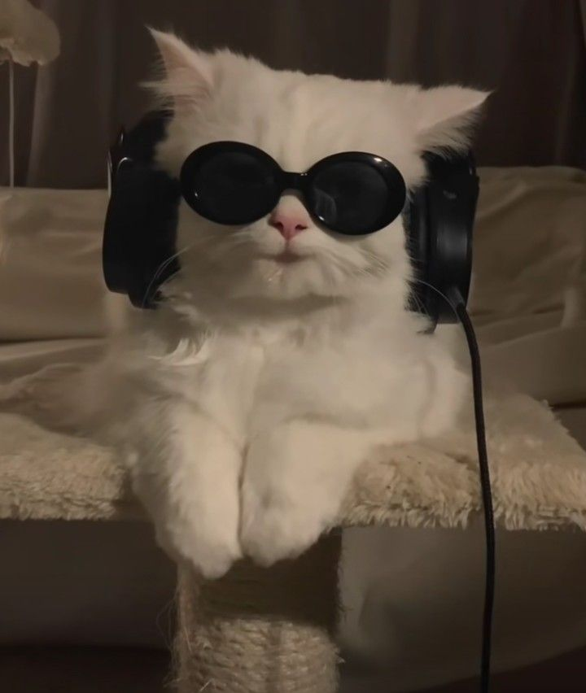

NOAMAAN HAKIM

SUMMARY
Experienced Marketing Manager with 6+ years in digital marketing, content creation, and data-driven strategies,
seeking to leverage expertise in driving team success and innovative campaigns.
EDUCATION
- Bachelor of Arts in Marketing
University of Chicago, Chicago, IL
Graduation: May 2017
- Master of Science in Business Administration (MBA)
University of Illinois, Urbana-Champaign, IL
Graduation: May 2022
WORK EXPERIENCE
- Marketing Manager
Creative Solutions, Chicago, IL
June 2022 – Present
-
Spearheaded the strategy and execution of digital marketing campaigns across social media, email, and
search engines, increasing brand engagement by 35% within the first year.
- Managed a team of 6 marketers, ensuring project timelines were met and campaigns delivered on budget,
resulting in a 20% reduction in campaign costs.
- Collaborated with cross-functional teams including product development, design, and sales to ensure
cohesive brand messaging.
- Utilized Google Analytics, HubSpot, and SEMrush to track and analyze campaign performance, leading to a
25% improvement in lead conversion rates.
- Developed and implemented an influencer marketing program that increased product visibility, leading to
a 40% increase in social media followers.
- Marketing Intern
NextGen Innovations, Chicago, IL
January 2018 – June 2019
- Assisted in the creation of content for the company’s blog, social media channels, and email campaigns, contributing to a 10% growth in traffic to the website.
- Supported the marketing team in executing SEO strategies that led to a 15% improvement in organic search results within 6 months.
- Analyzed customer feedback and survey data to help refine customer personas and marketing strategies.
- Managed event planning for client meetings and corporate events, improving client relations and increasing repeat business by 12%.
SKILLS
- Marketing Strategy & Execution: ⭐⭐⭐⭐⭐
- Social Media Advertising (Facebook, Instagram, LinkedIn, Twitter)⭐⭐⭐⭐⭐
- Content Creation & SEO (On-page, Off-page, Technical SEO)⭐⭐⭐⭐⭐
AWARDS AND CERTIFICATIONS
- Google Analytics Certified – Google, 2023
- Excellence in Leadership Award – XYZ Technologies, 2021
OTHER